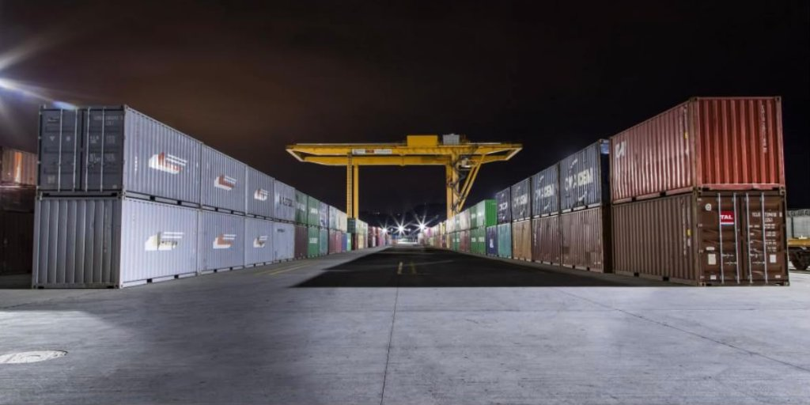

READILY AVAILABLE PRODUCTS
72h
Target initial quotation for readily available products, where practicable — subject to requirement details, specifications and supplier response.
INDEPENDENT PROCUREMENT & SOURCING
GTS helps organisations identify suitable suppliers, evaluate commercial options and coordinate supply for requirements ranging from everyday materials to complex, bespoke and high-volume projects.
See how sourcing works
Third-Party Logistics Channels
Connecting clients with verified suppliers and third-party freight carriers worldwide.
INDEPENDENT SOURCING • 35 YEARS OF PROCUREMENT EXPERIENCE
Drawing upon 35 years of procurement experience, GTS operates as an independent, procurement-led sourcing and supply enterprise. We investigate manufacturers and connect clients with commercial supply opportunities — without owning physical factories, warehouses, inventory, or transport fleets.
Researching vetted international and domestic manufacturers tailored to your exact specification.
Exploring diverse, competitive commercial supply options across global and regional markets.
Evaluating and negotiating competitive terms, volume tiers, lead times, and payment structures.
Coordinating agreed supply arrangements and managing delivery through established third-party channels.
GLOBAL REACH • ESTABLISHED THIRD-PARTY CHANNELS
Commercial deep-sea terminals and port facilities coordinated for container clearance and intermodal transfer.
Scheduled third-party ocean carriers utilized for high-volume, containerised, and bulk material assignments.
Coordinated air-cargo channels for urgent, high-value, or time-critical specialist components.
Overland road transit and direct-to-site distribution coordinated through vetted commercial haulage partners.
CAPABILITY & SCALE • SOURCING TIMELINES
READILY AVAILABLE PRODUCTS
72h
Target initial quotation for readily available products, where practicable — subject to requirement details, specifications and supplier response.
COMPLEX, BESPOKE OR HIGH-VOLUME
3–6months
Potential agreed sourcing window for complex, bespoke or high-volume assignments, depending on project complexity and supplier availability.
For strategic sourcing mandates, progress milestones can be agreed at approximately 30-day intervals. Indicative milestones reflect structured progress review points and are not guaranteed delivery dates.
FROM REQUIREMENT TO SUPPLY
GTS helps identify potential suppliers, compare options and coordinate the agreed route to supply for each requirement.
Clarify specifications, quantity, location, programme and commercial priorities before exploring supply options.
Research manufacturers, distributors and specialist suppliers relevant to the brief and market conditions.
Review commercial options and agree a practical route to supply through suitable third-party channels.
SOURCING ACROSS CATEGORIES
Explore typical sourcing assignments GTS can investigate, from core materials to specialist manufacturing and high-volume demand.
C16/C24 structural timber, engineered panels, plywood, MDF and sheet materials.
Explore categoryMineral wool, acoustic partition rolls, PIR/phenolic boards and fire barriers.
Explore categoryCommercial bathroom ceramics, brassware, vanity suites and plumbing systems.
Explore categoryExecutive desking, conference seating, modular workstations and hospitality FF&E.
Explore categoryElectrical switchgear, HVAC components and building services equipment.
Explore categoryCustom precision fabrications, made-to-brief components and manufacturing runs.
Explore categoryPhased production, factory capacity mapping and international supply terms.
Explore categoryCommercial plant, heavy equipment, municipal coaches and fleet requirements.
Explore categoryREQUIREMENTS OUTSIDE DISPLAYED CATEGORIES ARE WELCOMEThe catalogue is an illustrative demonstration of what GTS can investigate sourcing, not a stock inventory. Share your specification, quantity and delivery programme, and GTS will explore the market options.
HOW IT WORKS
Tell us what you need and the outcome you’re seeking.
Clarify specification, quantity, location and timing.
Explore relevant suppliers and potential supply routes.
Consider suitable commercial and technical options.
Coordinate the agreed route through suitable channels.
RAPID & STRATEGIC SOURCING
GTS can assist with rapid sourcing for standard or readily available products and more structured strategic sourcing for more complex, bespoke or high-volume assignments.
TENDER INVITATION
Share an RFI, RFQ, RFP, ITT, BOQ, specification, drawing, product schedule, quantity schedule or delivery programme for review.
Invite GTS to TenderHAVE A REQUIREMENT READY?
Share the specification, quantity, delivery location and required date.